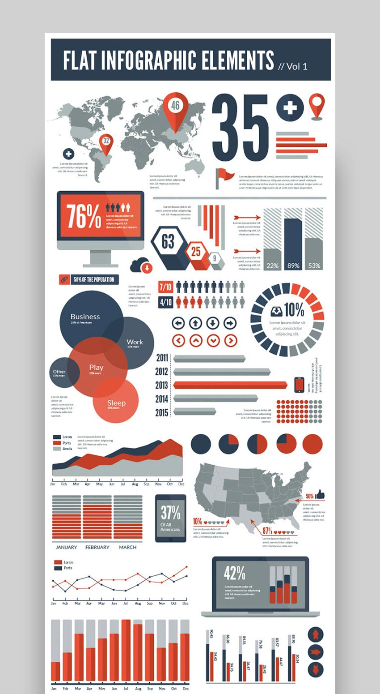
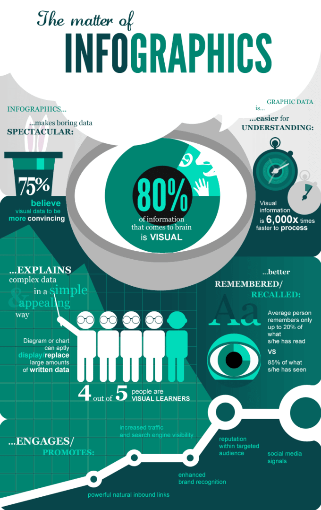
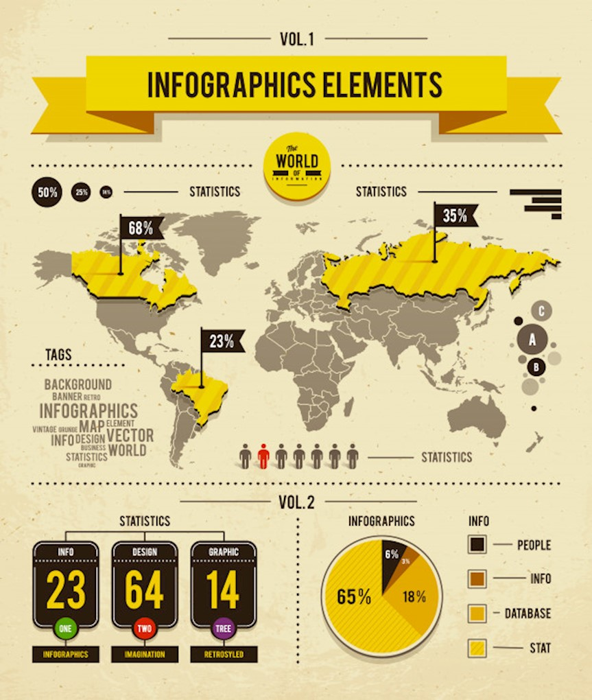
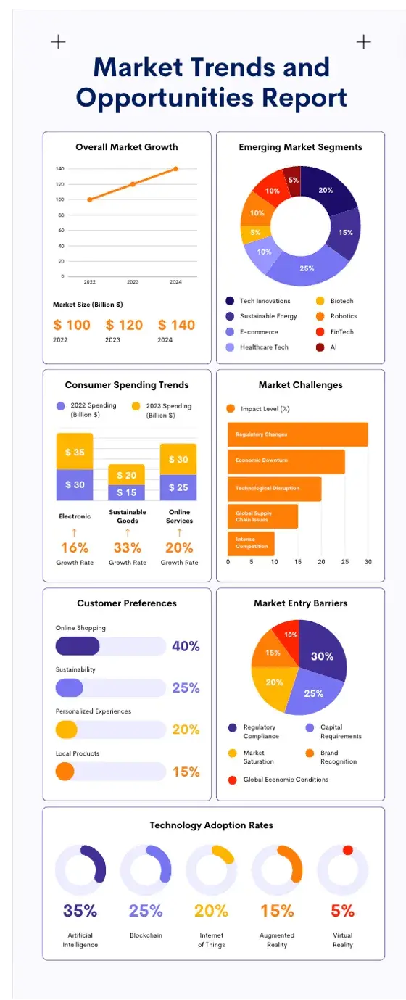
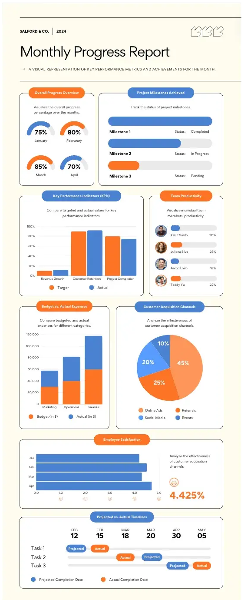
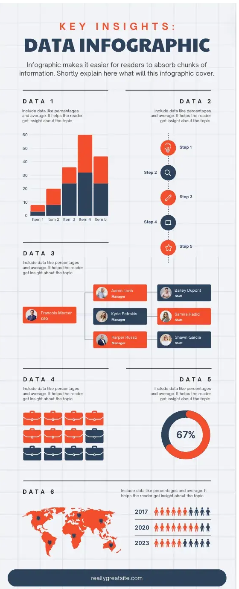

Six A4 sheets. All use the locked text from China vs Africa — Prisoners of Geography V3.
P4 is three separate designs, so it gets three sheets. Each version prints on one A4 page
(210 × 297 mm). In the print dialog, turn on background graphics and set
the paper to A4, portrait, margins none.
What P1–P4 are actually doing
These are kit posters, not stories. The job is to steal their system, not their dummy charts.

P1 — Flat kit, navy / coral / white
A dark header bar brands the sheet before the content starts.
One oversized numeral does the hook (their 305; ours can be 1/4, 3×, No.1 navy).
Pins on a grey world map locate the subject without a full cartographic essay.
Modules repeat the same three colours and the same stroke weight: donut, bars, pictograms, bubbles, laptop.
It reads top to bottom as a stack of widgets, with lots of air between them.

P2 — One metaphor, teal on teal
The giant eye is the thesis. Everything else is a caption to that picture.
Two-tone only. No third accent. Hierarchy comes from scale.
Pictogram people (4 of 5) make a ratio instantly, which maps to our 1 in 4.
A path or connector at the bottom turns a poster into a sequence.
Icons argue (hat, stopwatch, eye) instead of repeating the same card six times.

P3 — Banner, map, black number tiles
A yellow ribbon title is the only loud object besides the map.
The world map is the largest thing on the page; countries that matter are hatched and flagged.
Three black tiles (23 / 64 / 14) give a second rhythm after the map.
A people row is a pictogram legend, not decoration.
Two volumes — map first, then stats — is a clean chapter split for China then Africa.
P4 is three different designs, not one 3-column poster
The file is a kit: a market-trends report, a monthly progress report, and a numbered key-insights sheet sitting side by side. Each has its own hierarchy, page colour, and chart language. Options 4–6 steal those three systems separately.

P4a — Market trends report
A centred navy title with corner plus-marks. This is a template sheet, not a story page.
Widgets come in pairs: line + donut, grouped bars + horizontal bars, lollipops + pie.
Orange and blue only. Every chart uses the same two fills and the same thin axis.
Labels sit above the chart; the chart is the argument, the caption is short.
A full-width adoption row closes the page — one motif, many small multiples.

P4b — Monthly progress report
Cream page, tiny left meta, a mark on the right. It reads as a status pack.
Cards are 2-up: rings, milestone bars, target-vs-actual columns, a channel pie.
Milestones carry a status (completed / in progress / pending) next to a thin bar.
A gantt at the bottom turns the report into a timeline, not a dashboard wall.
Same orange / blue, but warmer paper and more air than P4a.

P4c — Key insights infographic
A grid-paper sheet. The title is the product: “Key insights / Data infographic”.
Numbered DATA 1–6 blocks, each a different visual (columns, steps, org, pictograms, donut, map).
Pictogram people and briefcases make ratios; the 67% donut is a single hook.
An org-chart and a world map are diagrams, not decorations.
This is a classic insights poster, not a report and not a 3-column brief.
What we take from the A3 poster
The A3 is the only reference that already speaks this brief. We keep its diagram language and drop it into six visual systems: P1, P3, and the three designs inside P4.
China diagrams
Hu Line: Heihe → Yunnan, sparse west / dense east
Concentric core + buffer ring + neighbour dots
Nine-Dash dashed arc and trade-route label
Africa diagrams
North–south axis broken by waterfalls
Organic ethnic blobs vs a European grid
Monument “1 in 4” with four person marks
Structure
Red / green legend dots or flags
Quote + page as a caption, then the paragraph
A full-width comparison band, larger than the point cards
Option 1 · A4
A3 diagram edition
Closest to the attached poster. One A4 sheet.
A4 portrait · 210 × 297 mm
Option 2 · after P1 · A4
Flat kit
Navy bar, hero numbers, pin map. One A4 sheet.
A4 portrait · 210 × 297 mm
Option 3 · after P3 · A4
Banner + map
Yellow ribbon, flagged map, two volumes. One A4 sheet.
A4 portrait · 210 × 297 mm
Option 4 · after P4a · A4
Market-trends report
Paired chart widgets, orange / blue, plus-marks. One A4 sheet.
A4 portrait · 210 × 297 mm
Option 5 · after P4b · A4
Monthly progress report
Cream status pack: rings, milestones, gantt. One A4 sheet.
A4 portrait · 210 × 297 mm
Option 6 · after P4c · A4
Key insights
Numbered DATA blocks, steps, org, map, 1-in-4. One A4 sheet.